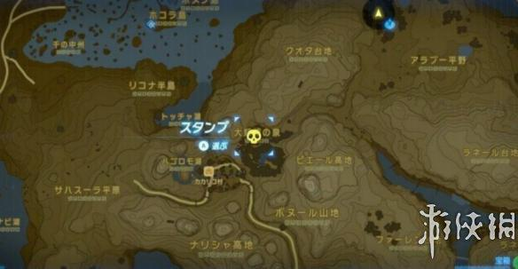
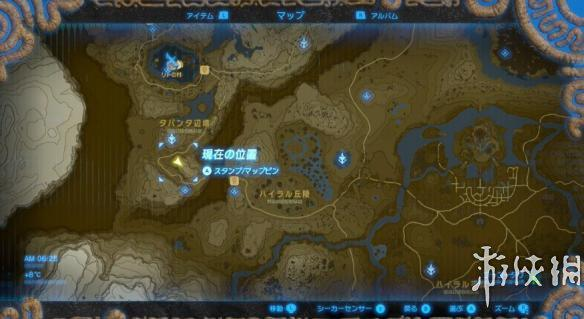
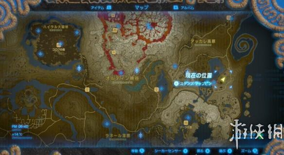
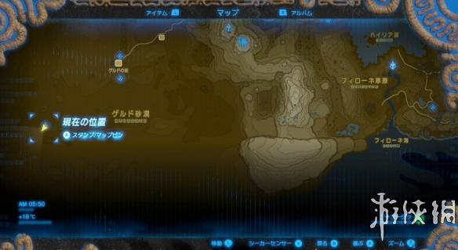

塞尔达传说荒野之息中，我们寻找4个妖精之泉就可以锻造防具提高自己的防御力，今天小编就为大家带来四个大妖精之泉的位置，希望大家喜欢。
四大妖精之泉位置
游戏中大妖精之泉一个四个，开启需要先付出一定量的金钱，最后甚至要10000卢比才能开启。大妖精之泉的作用是可以帮助玩家强化防具，强化的时候还需要一定的素材。
「カカリコ村」里面

「タバンタの塔」附近

「アッカレ」地区

「ゲルド」地区
